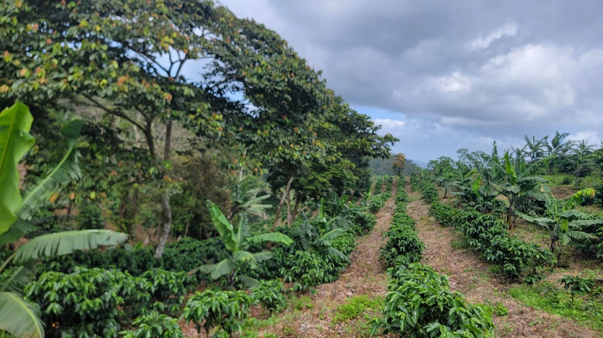
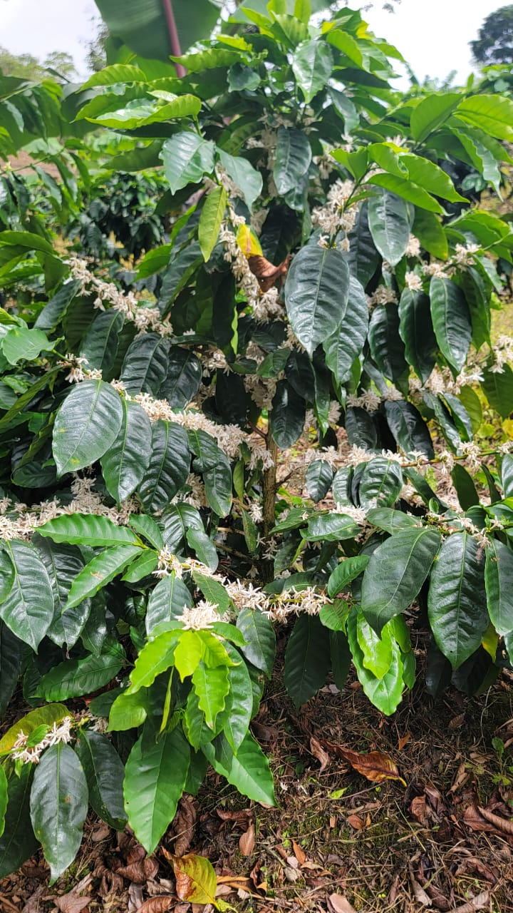
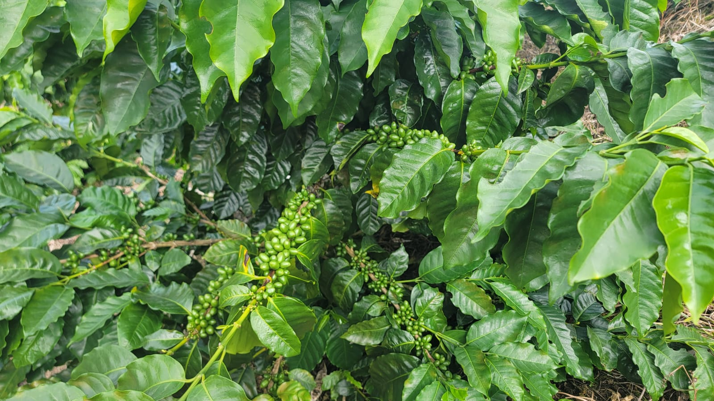
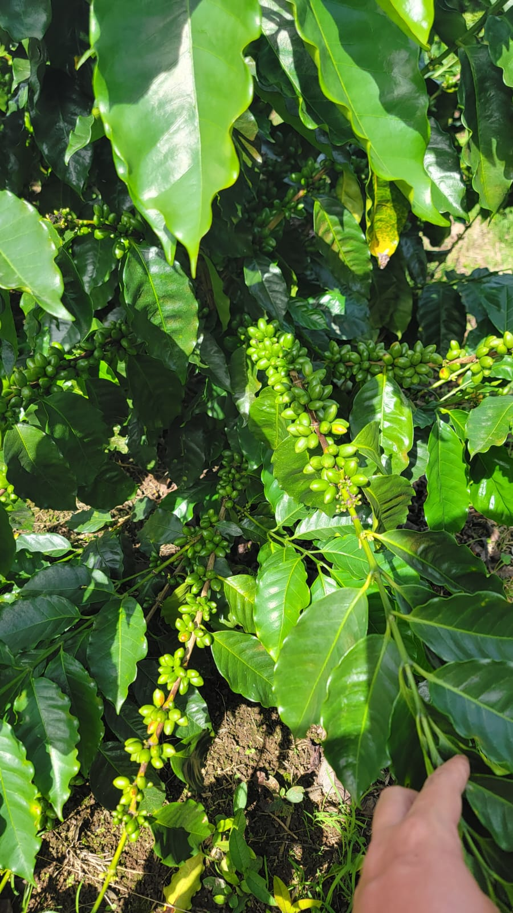
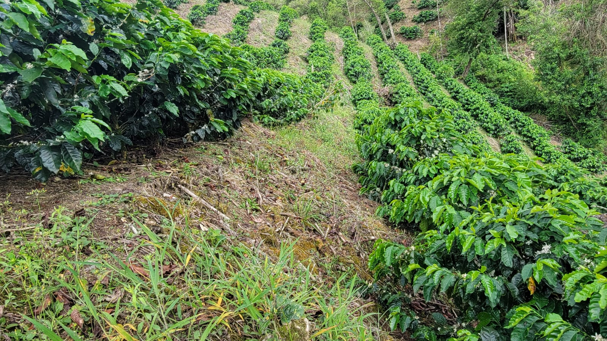

Loma Azul Coffee nace en Santa Martha de Loma Azul, municipio de San Rafael del Norte, Jinotega, Nicaragua.
Somos una familia dedicada a producir café de alta calidad, cuidando cada detalle desde la floración hasta la taza.
Cada lote refleja el esfuerzo, la dedicación y el orgullo de producir café en nuestras montañas.
Ubicada en Santa Martha de Loma Azul, San Rafael del Norte, Jinotega.
Santa Martha de Loma Azul
San Rafael del Norte
Jinotega
1182 msnm
Obatá
Lavado
Cada etapa del proceso se realiza con dedicación para ofrecer un café que refleje el origen y la calidad de Loma Azul Coffee.
Todo comienza con la flor del café.
Seleccionamos únicamente las cerezas maduras.
Procesamos el café con método lavado.
El secado lento conserva la calidad del grano.
Buscamos resaltar las mejores características del café.
Finalmente disfrutas una taza con origen y trazabilidad.
Imágenes reales de Loma Azul Coffee y del entorno donde cultivamos nuestro café.




Gracias por conocer nuestra historia. Cada taza representa el esfuerzo, la dedicación y el amor por el café cultivado en nuestras montañas.
Santa Martha de Loma Azul
San Rafael del Norte
Jinotega, Nicaragua
Obatá
Lavado